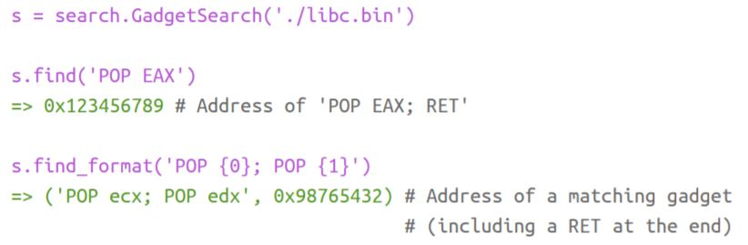
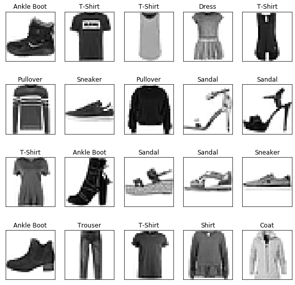

Nadav Gover
Logic will get you from A to B. Imagination will take you everywhere.
Hi! I'm Nadav. An electrical engineer and a developer from Ma'agan Michael, Israel. It's really cool here, you should come and visit. Really, come and visit. You can smell the sea from here, and thanks to it, it has become a big part of me. I go there a lot and spend my summers there. I love to dive and I'm a certified dive master. Hiking is also something I do a lot. I like best to hike in Israel, close to home. I believe it's important to know your surroundings before you explore far places, and what's a better way to do so than hiking? A part from hiking and diving, I also do some other sports. I'm a big tennis fan (Federer of course, don't tell me if you are a Nadal fan. Seriously, don't) and I play some myself. Also, might be a bit surprising, I play a lot of chess. Chess is a great game which just has a bad stigma of a boring game, in fact it is very interesting. My goal is to become a chess Grandmaster.
Most of my developing skills I acquired myself. That's how I learn the best, through hands-on and trial and error.
I consider my programming skills to be very good (if I may) and I don't feel limited with any task or challenge that I would take.
If I encounter a problem during coding, I have to solve it, for the simple reason that otherwise I just won't fall asleep at night. Well that's a problem.
My B.Sc in electrical engineering I got in Tel Aviv University. Specializing in computers (hardware and software) and feedback and control systems.
I was alwyas more drawn to the field of computers and software, or to be specific, to the fields of machine learning and information security.
So I guess this pretty much summarizes me in a few words. Now check out some of the projects I did over the years.
The Suduko solver, as it names implies, solves a Sudoku puzzle using backtracking algorithm. It is implemented with Python.
This is probably the first project I've done with Python. The decision to make this project came during a 6 hours long bus ride with my friends. We had nothing to do during the ride and one of the friends brought a newspaper with him. So we started solving all the puzzles there. When we got to the hard Suduko, it seemed as it was too hard for us to do during a bus ride. It was in this moment where I decided that I will never solve a Suduko puzzle ever again. When I got home I immidiately started working on the Sudoku solver.
You know how when you come about to solve a Sudoku you right small digits in the corner of a cell, meaning only these numbers can occupy this cell, otherwise it will be a violation of the Sudoku rules? So that's what the Suduko solver knew what to do in the beginning. It went through all the puzzle and remembered what can go where. After that, it looked where it had only one option for a cell and filled this number in. And do this all over again until you finish. So:
While this method works well on easy Sudokus, it fails to solve hard ones. The reason is that hard Sudokus often don't have a cell with only one option, which will cause the proposed method to go in an infinite loop. So we need to come up with a new method to overcome this problem.
Insted of repeating infinitly, we can guess a number from the list of options we got in step 1, try to solve the Sudoku with this guess, and if it works then this is a solution. If not (e.g. same number in same row), we track our steps backwads and guess the next number in the list of options. This method is called backtracking. Since we know that one of the options has to solve the puzzle, we can be sure that we will not encounter an infinite loop this time. So:
View code on GitHub
Try it yourself just press the green run button
The rules of the wikipepdia game are simple. Players start on a randomly selected Wikipedia page and must navigate to another given page only by clicking links in the current article. The goal is to arrive at the destination page with the fewest number of clicks (steps) and in the least amount of time.
This project is all about winning this game. Given a source page and a destination page, the program yields the shortest path. And when you say shortest path, you say Breadth-first search (BFS) algorithm. And indeed this project was implemented with the BFS algorithm and using linked lists with Python.
The BFS algorithm finds the shortest path from a node in a tree to another node. For that we need a tree and to define what each node is. So each node in the tree is a wikipedia page, the root of the tree being the source page, and the descendents of each node are the links in its wikipedia page. Also, in BFS there is a use of queue, so the queue was implemented with a linked list. The algorithm guarentees to yield the shortest path but there might be more than one path with the same length.
View code on GitHub
Try it yourself just press the green run button
in the Bin Packing problem items of different volumes must be packed into a finite number of bins or containers each of volume V in a way that minimizes the number of bins used. It differs from the multiple knapsack problem in that all items have to be packed to certain bins, whereas, in the multiple knapsack problem a subset of items can be selected.
The motivation for this project is to optimally place guests in an event with limited amount of tables. The tables are the bins and the guests are the items. This problem is known to be NP-hard. To implement this with a short running time there was a use of dynamic programming. A matrix with rows representing the guests and columns representing the tables was implemented. Each entry in the matrix is the amount of guests that could be placed with the current tables set.
To be more specific, each guest may have a constraint or many constraints. For example a guest can ask to be in a certain table or to sit next to some other guest. Perhaps the guest requires a wheel chair and not all tables have the that option. And many other constraints.
All of this the dynamic programming (dp) matrix takes into account and yields the best result
with runtime of
O(number of guests + number of tables).
Bonus fact: This project is actually used in practice to place guests in the passover "seder" of Kibbutz Maagan Michael
View code on GitHub
This project is divided in to two parts. In the first part there was a use of a multi-class perceptron classifier. A multi-class perceptron classifier is the extension of the Perceptron Learning Algorithm (PLA) for binary classification. One-vs-all strategy was used which means each class was trained to identify if the input is from its class or not (binary classification). The input, in this case (so as in the second part of this project), was the MNIST data set which is constructed out of 70,000 images of hand written digits between 0-9. This means that for the multi-class classifier 10 different classes were trained (1 for each digit). To then predict the input image correctly, the label that gets the highest confidence is the prediction.
Since the input data is not linearly separable, PLA will never terminate, and its behavior can become quite unstable, and can jump from a good perceptron to a very bad one within one update. To overcome this, the pocket algorithm was used. This algorithm keeps 'in its pocket' the best weight vector encountered up to iteration t in PLA. In the end, the best weight vector will be reported as the final hypothesis.
In the second part of the project a Softmax Regression was applied on the MNIST dataset. Softmax regression (or multinomial logistic regression) is a generalization of logistic regression to the case where we want to handle multiple classes. The cost function is the cross-entropy error but generalized to K classes. The composition function is the sigmoid function. Since zero valued inputs can artificially kill weight updates, the inputs were scaled to be between 0.01 to 1 and not 0 to 1. The weights were updated using gradient descent.
Just to demonstrate one of the difficulties of this classifier, look at the following image and see how similar 9 can be to 4, for example:
In the above image there is an example of misclassification. The predicted class is 9 and the actual class is 4.
This image would most likely be interpreted for a human reader as either a 4 or a 9 (perhaps even tending more to 9 as classified) and maybe the reader will need a context to understand.
This image comes to demonstrate the difficulty of a human reader to distinguish between these two classes so all the more so to a computer and all the more so to a computer without a context.
View code, final reults and conclusions on GitHub
Try it yourself just press the green run button
In this project the input is the Iris data set. It consists of 50 samples from each of three species of Iris (Iris setosa, Iris virginica and Iris versicolor), so 150 total samples.
One class is linearly separable from the other two; the latter are not linearly separable from each other.
Four features were measured from each sample: the length and the width of sepals and petals, in centimeters.
scatter plot of the data set:
In this project models were trained with Support-vector machines (SVM) using Sequential Minimal Optimization (SMO) with linear and RBF kernels. To compare those two models, consider these two criteria: run time and performance. The run time of both models is approximately 10 seconds. The differences between the run times can be neglected because they are very small. Performance in the sense of accuracy the RBF kernel achieved in average 5% more than the linear kernel. The RBF kernel preformed well on both the linearly separable data and the non-linearly separable data while the linear kernel preformed well only on the linearly separable data.
View code, final reults and conclusions on GitHub
In this project you can see the K-means and Expectation Maximization (EM) algorithms in action.
This two algorithms are applied when unsupervised learning clustering is needed.
In this project there are two 2-dimensional multivariate gaussian processes.
The data set was created from the given processes with 2,000 samples (1,000 samples for each process) and is shown below:
In the above image we can see the two clusters created and their centroids (or means).
K-means: k-means clustering aims to partition n observations into k clusters in which each observation belongs to the cluster with the nearest mean.
The K-means algorithm was implemented with K=2 (meaning two clusters) and the Euclidean distance metric and was run for 100 iterations.
The initialization vectors were chosen randomly to be 2 different samples of the data set.
The clusters at the end of the run are as follows:
EM: The EM iteration alternates between performing an expectation (E) step, which creates a function for the expectation of the log-likelihood evaluated using the current estimate for the parameters,
and a maximization (M) step, which computes parameters maximizing the expected log-likelihood found on the E step.
These parameter-estimates are then used to determine the distribution of the latent variables in the next E step.
The model parameters are: centroids (mean vectors), covariance matrices and mixing coefficients (how many samples in each cluster)
The algorithm was implemented using an iteration formula that is consistent with diagonal covariance matrices.
The clusters at the end of the run are as follows:
In both the K-means and EM we got convergence early on. The main difference is in the mean vectors. While the mean vector of the cluster with mean μ=(3,3) is similar in both algorithms, the mean vector μ=(1,1) is much closer on the EM algorithm.
This is explained by the difference between the algorithms:
K-means:
View code, final reults and conclusions on GitHub
In this project we focus on a simple stream cipher called Repeated Key cipher. A repeated key cipher works by XOR-ing the bytes of the plaintext with the bytes of the key similarly to a one-time pad:
We need a way to distinguish between Enlglish to Gibrish, so we need to make a scoring system. The scoring system is a system such that a text containing a plausible text in English will receive (with a high probability) a higher score than a random text.
We can also brute force the key.
We need to attempt all possible keys of a given length, evaluate the plaintext possibilities using the plaintext scoring system, and return the “correct” plaintext.
The problem with the brute force method is, well, that it’s brute force.
This means we try many attempts without much thought. Trying to a break a key longer than a few bytes is going to be impractical (as we need 28(number of bytes) attempts).
So we need to find a way which is much faster, and for example, can break a key of length 10 or higher. And we may assume the ciphertext is long.
We can take advantage of the fact that we know the encryption algorithm and based on the assumption that the ciphertext is long.
The way decided here to take advantage of the poor encryption algorithm is to make the cipher text to blocks in the size of the key length. Since every byte of the ciphertext in steps of the size of key length was encrypted with the same byte of the key, we can say that it was encrypted with a key of the length of one!!! Now all we have to do is break the one byte key by brutefoce.
Well this is not a hard task, we just iterate over all 256 options, take a score and return the best score.
We obviously need to do that as many times as the length of the key, but every time it is just brute forcing a key with length of 1. This fact makes it a not time consuming method and therefore feasible.
View code on GitHub
In this project, we exploited a vulnerability to gain root permissions. The program we attacked is sudo - a standard program included on Unix systems, and used to execute commands with root permissions.
We have a sudo program, which receives a password and executes a command as root iff the password is correct.
However, you we don’t know the password… We also have the source code for the program.
The vulnerability in this code is using strcat with wrong sizes.
Since the buffer length is 20, and 10 bytes are already full and that the password is also 10 bytes long,
So we actually can get to the address buffer[20] (normally buffer[19] would be \0) and put there whatever we want.
Using IDA and the source code we can see that the variable auth is right above the buffer on the stack.
So if we overflow the buffer it actually overflows into auth.
We can see that when auth is 1 the validation returns true.
Since auth was already initialized to zero, if we change the last bit of it to 1, it will be 1.
This would not work if auth was not initialized to zero because then the high bytes of auth (the bytes we don't have access to) will not be zero.
So using this fact, we can put in the last byte of our password the value of 1.
In order to open bash we need to understand how the program works. We do it by crashing it. We're crashing the program and generating a core dump.
We then can open the core dump using GDB and understand how the buffer is arranged.
The vulnerability here is that there is an unsafe use of strcat.
There is no length checking for the password and it is passed into the strcat as is, and a buffer overflow occured.
Using this we could just input a long password to overwrite the return address (RA) and crash the program.
We used an informative input so we would understand where the RA is by reading the stack pointer (ESP) is.
This caused a segmentation fault and generated a core dump.
The core dump of a program is a “snapshot” of the program memory and registers at the point in time right when it crashed. We can open it using GDB to find some important things.
View code on GitHub.
Dealing with user input can be a difficult task. Especially when the user has malicious intentions. In this project we have some examples of programs with user input that can be exploited. The common ground for all of the examples is that the writer of the program meant the user to input x but the user instead input y and thus hacking the program.
For example, a python program with the use of eval function in it. eval is very sensitive because if we can inject os.system() in it we can get full control of the program.
Another example in this project is an unsafe use of python's pickle module. The pickle module allows us to define how the data will be pickled using __reduce__ function. It returns a tuple of callable and arguments. We can use the callable as os.system and the arguments as echo hacked (for example). All this we put inside a class and pickled the class. When the program unpickles it we get full control of the program.
Sometimes parsing the information from the user input can be done in a vulnerable manner. One such example can be found in the project.
Sometimes user input validation takes a long time, and if we can manipulate the input data between the validation and execution we can pass the validation and execute whatever we want. You can see that in action in the project.
View code and see all the examples on GitHub.
Most buffer overflow attacks rely on writing our code into the stack and then hijacking the flow of the program to execute our code. After this sort of attacks became popular, some security measures were taken to make it harder to carry out these attacks. During 2000-2005, many operating systems began implementing various protections on the executable space, typically by marking the stack (and/or other areas of the memory) as non-executable. This prevented the classic buffer overflow attack we exploited so far, and presented a new challenge for attackers. In 2006, an attack called return-to-libc was published, describing a mechanism that enables obtaining a shell in some cases, even with a non-executable stack. This technique was implemented in the first part of the project. In 2007, a significantly improved version of this attack was published under the name return oriented programming (ROP). This was presented in Blackhat 2008, and enabled executing far more sophisticated codes than return-to-libc. This technique was implemented in the second part of the project. Our target in this project is the sudo program. It has a non-executable stack so regular BOF attack won't work.
Before starting to implement return to libc, we’ll need to understand how to inspect
the memory of libc (the C standard library).
We can do this with GDB and specifically the info files command and look for
text sections in libc. The important part is that
this section of the memory is executable.
In the second part of the project we’re going to implement ROP attacks! However,
implementing a ROP requires having a working “gadget search engine” that can
search the memory and locate gadgets! It will support searching for the same instruction with multiple combinations of
registers at once, so that we don’t have to try all combinations manually. For
example:

Now we are ready to implement ROP.
View code on GitHub.
You are Dan. You live in an appartment with 3 roommates. Alice is paying the electricity bill, Bob is paying the water bill, Carol is paying for the new lights in your balcony and you just went and got groceries for dinner. The end of the month is here and you want everyone to pay equally so everything will be fair. Unfortunately not everybody paid the same amount and it could be pretty annoying to calculate how much someone needs to pay to somebody else. Worry not! This is what this app is for! We will split the expenses equally, and in a pretty cool way. Actuallt this problem is NP-complete, so check out how it is done.
Great question. In the big picture we build a graph where each node is a person and each edge is the amount he needs to pay/get. Then apply the Ford-Fulkerson algorithm to find the max flow and the way that money flows through the graph. And that's it. Are you ready to dive to the small picture? Here we go. So how to build the graph exactly? Let's explain that with an example. So let's assume Alice paid 50$, Bob paid 30$, Carol 15$ and Dan paid 5$. So in order to build the graph we need to:
View code on GitHub.
In this project we are experimenting with Convolutional Neural Network (CNN) and different regulariztoin methods. CNN is a type of a netwrok that performs well with images and object detection so it is only natural that we will deal with images. And indeed, the data set for this project is FashionMNIST. The FashionMNIST is a dataset that consists of images of different clothing. Each image is a 28x28 grayscale image, associated with a label from 10 classes. To get a feeling for the dataset we are working with, lets visualize it!  The different regulariztoin methods that were under test are dropout, weight decay and batch normalization.
Dropout is a relatively new algorithm for training neural networks which relies on “dropping out” neurons during training in order to avoid overfitting.
In complex networks the loss can get so high that when we come to update all our parameters (weights) it will nullify them. For this we have weight decay. Before updating the network, we first change the loss just a little bit to prevent this problem.
We normally normalize our input data. In batch normalization we also normalize the inputs of the hidden layer. This gives us a big improvement in the training speed.
Below is a cool graph showing different learning rates during training the model for this project.
View code on GitHub.